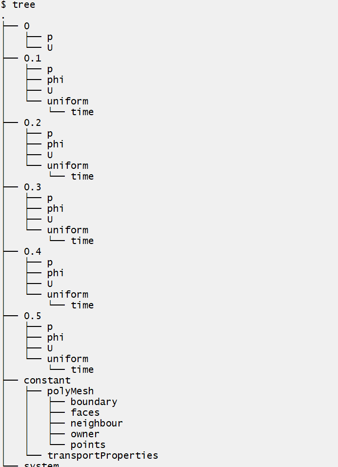

学习OpenFOAM主要出于课题需要，希望实现以下几个目标：
l 【 】学会用SnappyHexMesh生成高质量网格；
l 【 】学习使用OpenFOAM自带的 Immersed Boundary Method （IBM）处理复杂几何边界；
l 【 】实现LES算例；
l 【 】实现CFD的批处理以完成大量算例。
这部分主要参CFD大佬【流沙】提供的方法，详情见网页：
https://www.cnblogs.com/LSCAX/p/7074326.html
出于方便考虑，直接在Github上下载并安装BlueCFD，详情见下载页：
https://github.com/blueCFD/Core/releases/tag/blueCFD-Core-2017-2
目前已经更新到 2017-2 版，搭载OpenFOAM 5.0 版本，基本能满足使用要求。
一开始不打算写问题描述，在找lid-driven cavity flow一词的中文翻译的时候才发现也有大佬学习这个算例，而且这个算例能说明湍流的特征，也有相关的实验支持，所以添加问题描述这个环节，关于这部分的知识主要参考网页：
【陈十七】cavity算例https://blog.csdn.net/weixin_39124457/article/details/88926300
lid-driven cavity flow 翻译成中文就是 顶盖驱动方腔流 （参考知网翻译），理想模型见图 3‑1。当顶盖以不同的速度运动时，方腔内的流体会呈现不同的流动特征。方腔流可以反映出不同雷诺数条件下的流场特性， 并且流场中包含了涡旋、二次流、复杂三维流动、不稳定层流、过渡流和紊流等多种现象， 成为研究复杂紊动流场最为理想的物理模型， 也是验证数值模拟方法准确度和效率的标准（张金凤，2015）。
图 3-1 顶盖驱动方腔流动模型，左为OpenFOAM Tutorial给出的计算模型，右图为实验模型
在OpenFOAM中求解这个问题主要分为三个环节：前处理（）——求解——后处理。首先将官方指南设置好的算例放入RUN所在的文件夹下，在BlueCFD终端中输入：
1 cd $FOAM_RUN
2
3 cp -r $FOAM_TUTORIALS/incompressible/icoFoam/cavity/cavity .
4
5 cd cavity在cavity下面有这样三个文件夹。
图 3‑2 cavity文件夹下所包含的内容
输入以下代码也能显示cavity文件夹下的目录结构，结果如图 3‑3所示：
1 tree $FOAM_RUN/cavity
图3-3 在BlueCFD终端下查看cavity文件夹下所包含的内容
一般case文件夹包括三个子文件夹，每部分的内容分别是：
0：存储物理量的初始值
——p：存储初始时刻的压力
——U：存储初始时刻的速度
constant：存储网格参数、边界条件以及物理属性（如材料参数、湍流参数等）
——polyMesh：blockMesh生成的网格文件
——transportProperties：物理特性
system：存储求解控制参数
——blockMeshDict：blockMesh网格控制文件
——controlDict：求解时间步的控制参数和输出控制参数
——fvScheme：离散格式
——fvSlotion：算法格式
上述内容参考：【流沙】的博客http://blog.sina.com.cn/s/blog_599d8faa0102wq09.html
OpenFOAM默认按照三维笛卡尔坐标运行，lid-driven cavity的算例是二维的运动，所以通过设置 empty 的边界条件实现二维的计算。
本例采用OpenFOAM自带的网格生成器blockMesh实现，包含网格信息的文件名为blockMeshDict，放在目录cavicity/system下面。
图 3‑4 blockMeshDict的存放位置
在BlueCFD终端输入以下代码可以查看文件的内容：
1 cat $FOAM_RUN/cavity/system/blockMeshDict在终端显示结果如下：
图 3‑5 blockMeshDict的内容
可以看到blockMeshDict大致包含以下几个部分的内容
1. 软件信息
1 /*--------------------------------*- C++ -*----------------------------------*\
2
3 | ========= | |
4
5 | \\ / F ield | OpenFOAM: The Open Source CFD Toolbox |
6
7 | \\ / O peration | Version: 5 |
8
9 | \\ / A nd | Web: www.OpenFOAM.org |
10
11 | \\/ M anipulation | |
12
13 \*---------------------------------------------------------------------------*/
14
15 //说明基本信息2. 基本参数
FoamFile
1 {
2
3 version 2.0;
4
5 format ascii;
6
7 class dictionary;
8
9 object blockMeshDict;
10
11 }3. 定义缩放比
1 convertToMeters 0.1; //说明缩放尺寸，即模型中1个几何单位代表0.1m4. 定义顶点
1 vertices //定义了立方体的顶点坐标，8个顶点，编号0~7
2
3 (
4
5 (0 0 0)
6
7 (1 0 0)
8
9 (1 1 0)
10
11 (0 1 0)
12
13 (0 0 0.1)
14
15 (1 0 0.1)
16
17 (1 1 0.1)
18
19 (0 1 0.1)
20
21 );
22
23 5. 定义block和block的网格划分
24
25 blocks
26
27 (
28
29 hex (0 1 2 3 4 5 6 7) (20 20 1) simpleGrading (1 1 1)
30
31 );
32
33 //定义了构成block立方体的所有点，x、y和厚度方向分别划分为20、20、1个网格,simpleGrading应该指的是网格的尺寸的比例6. 定义边
1 edges
2
3 (
4
5 ); //定义边 edge，这里是体网格，所i有没有edge7. 定义边界
1 boundary //定义边界
2
3 (
4
5 movingWall //定义顶部的运动壁面，外面的名字是边界面的名称
6
7 {
8
9 type wall; //边界面的类型
10
11 faces
12
13 (
14
15 (3 7 6 2) //由3762四个点构成的面，其中按照顺序以右手法则确定法向量
16
17 );
18
19 }
20
21 fixedWalls
22
23 {
24
25 type wall;
26
27 faces
28
29 (
30
31 (0 4 7 3)
32
33 (2 6 5 1)
34
35 (1 5 4 0)
36
37 ); //定义静止壁面
38
39 }
40
41 frontAndBack
42
43 {
44
45 type empty; //定义前面和后面均为empty以实现二维运动
46
47 faces
48
49 (
50
51 (0 3 2 1)
52
53 (4 5 6 7)
54
55 );
56
57 }
58
59 );8. 定义需要融合的部分
1 mergePatchPairs
2
3 (
4
5 ); //list of patches to be merged
6
7 blockMeshDict文件编写好后，在BlueMesh终端输入以下命令即可执行网格生成blockMesh返回如图3‑6所示结果。
图3‑6 blockMesh生成网格返回的结果
建议采用Paraview查看网格划分结果，为了保持Paraview一直打开，所以在调用Paraview的命令后面空格兵添加&符号：
1 paraFoam &
图 3‑7在Paraview中查看划分的网格
ParaView的使用也不太熟悉，做到这一步的时候真的感觉我是从零学起，哭辽。
注意先选定要绘制的part，点击apply之后再修改绘图的控制选项。
图 3‑8在Paraview中设置显示网格划分的结果
因为整个过程从时刻开始，所以如前文所述，初始条件放在0这个文件夹下面，包括压力（文件夹p）和速度（文件夹U）。首先看p文件包含的信息，如图 3‑9所示。
图3-9 p文件包含的信息
头文件略去，其余信息分析如下：
1. 量纲
一个7维向量来定义，每一维表示的量纲如表 3‑1所示：
表3-1 OpenFOAM的量纲
|
维度 |
物理量 |
SI单位 |
USCS单位 |
|
1 |
质量（Mass） |
Kg |
lbm |
|
2 |
长度（Length） |
m |
ft |
|
3 |
时间（Time） |
s |
s |
|
4 |
温度（Temperature） |
K |
ºR |
|
5 |
物质的量（Quantity） |
mol |
mol |
|
6 |
电流（Current） |
A |
A |
|
7 |
发光强度（Luminous intensity） |
cd |
cd |
这个p文件里的量纲为m2s-2，即为运动压力（Kinematic pressure）的量纲
1 dimensions [0 2 -2 0 0 0 0]; //定义量纲，这里指运动压力2. 场的初始条件
流场的每个控制点的数值，这里定义为均匀（uniform）并取为0
1 internalField uniform 0; //场的初始值，即流场的每个控制点值，这里定义为均匀（uniform）并取为03. 边界的初始条件
1 boundaryField
2
3 {
4
5 movingWall
6
7 {
8
9 type zeroGradient;
10
11 }
12
13
14
15 fixedWalls
16
17 {
18
19 type zeroGradient; //定义压力梯度为零，即法向压力梯度为零
20
21 }
22
23
24
25 frontAndBack
26
27 {
28
29 type empty; //empty使流动为二维
30
31 }
32
33 }速度场的初始条件也是类似的：
1 dimensions
1 dimension [0 1 -1 0 0 0 0]; //速度的量纲 m/s
2 internalField uniform (0 0 0); //定义速度场的初始值，注意速度场是个矢量，所以是定义的是向量
3
4
5
6 boundaryField //定义的边界的速度
7
8 {
9
10 movingWall
11
12 {
13
14 type fixedValue;
15
16 value uniform (1 0 0); //和顶盖的移动速度一致
17
18 }
19
20
21
22 fixedWalls
23
24 {
25
26 type noSlip; //无滑移壁面边界条件
27
28 }
29
30
31
32 frontAndBack
33
34 {
35
36 type empty; //设置前后为empty来实现二维流动
37
38 }
39
40 }3.2.4 物理性质
物理性质通常定义在命名为 xxProperties 的文件中，对于本问题只需要定义运动粘度所以放在文件 tansportProperties 中，定义的代码如下：
1 nu [0 2 -1 0 0 0 0] 0.01; //定义运动粘度nu，前面的向量为量纲注意在这里，考虑雷诺数为10，根据那么运动粘度取值为0.01
3.2.5 时间控制
时间步的控制及相关的输出文件在system文件夹下的controlDict文件中。开始和结束时间是必须设定的，比如设定开始时间为0，这意味着OpenFOAM需要从名为0的文件夹中读取数据。这里将startFrom指定为startTime，并设定值为0，将stopAt指定为endTime，且指定为0.5s（即顶盖完整地划过10次）。
时间步长的关键词为deltaT，可以通过库朗数来确定，库朗数定义为：
其中表示速度方向的网格尺寸，为时间，需要保证在每一处地方，考虑最极端的情况有：
反算得到。指定OpenFOAM按照一定的时间步输出，那么就会在创建相应的时间步的文件夹如0，1.0，2.0等，将相关文件保存在其中。
1 application icoFoam; //求解器选择icoFoam
2
3
4
5 startFrom startTime; //指定开始的关键词
6
7
8
9 startTime 0; //指定开始时间
10
11
12
13 stopAt endTime; //指定结束的关键词
14
15
16
17 endTime 0.5; //指定结束的时间
18
19
20
21 deltaT 0.005; //指定时间步长
22
23
24
25 writeControl timeStep; //指定文件输出的方式：按照时间步输出
26
27
28
29 writeInterval 20; //每20个时间步输出一个结果
30
31
32
33 purgeWrite 0;
34
35
36
37 writeFormat ascii;
38
39
40
41 writePrecision 6;
42
43
44
45 writeCompression off;
46
47
48
49 timeFormat general;
50
51
52
53 timePrecision 6;
54
55
56
57 runTimeModifiable true;
若采用有限体积法，则离散格式的设定在system文件夹下的fvSchemes文件中，线性求解器和误差等算法格式的指定在system文件夹下的fvSolution文件中确定。对于本问题，当考虑为不可压缩流体时候，采用PISO算法，需要注意的本文采用的是相对压力（运动压力），所对需要指定pRefValue和pRefCell两个关键词。
当前处理的每个部分都设置好之后，求解实质上就调用求解器，对于低层流，这里调用icoFoam，并指定相应的算例文件：
1 icoFoam -case $FOAM_RUN/cavity
图 3‑10计算结束后生成0.1~0.5结果的文件夹
后处理也是熟悉Paraview的一个重要过程
1. 点击apply，确保cavity.foam左边地小眼睛是蓝色的。
2. 选择要编辑的物理量，点击Edit，在右边可以调整绘图的选项。
point icon和 cell icon 的区别：
point icon以每个单元的值插值后绘制
cell icon 每个单元只有赋一个值
3. 【略，妈的paraview好难上手】
首先创建cavityFine的算例文件夹，并将原始cavity的文件的设置文件constant和system文件夹拷贝到新的算例文件夹下
1 mkdir cavityFine
2 cp -r cavity/constant cavityFine
3 cp -r cavity/system cavityFine
4 cd cavityFine
修改blockMesh将网格尺寸变为（40，40，1），，保存文件后重新输入命令blockMesh即可生成需要的网格。
！！！注意！！！我发现在blueCFD中，当修改网格文本之后，首先要退回到run文件夹下重新进入cavityFine这个时候才能读取更新后的网格文本。
mapFields命令能够将一个几何的场结果映射到另一个几何上面，本例中粗细网格的几何和边界都是一样的，因此在调用mapFields命令时输入的参数选项为-consistent，并将粗网格的最后的结果映射到细网格开始的时刻（细网格中controlDict的startTime相应地要改为0.5）：
1 mapFields $FOAM_RUN/cavity -consistent -sourceTime ‘latestTime’
由于网格尺寸减小了，根据库朗数控制的时间步长也要调整为0.0025s，将输出控制从timeStep改为从runTime输出，每0.1s输出一次结果，因此writeInterval改为0.1。注意因为cavityFine的startTime改为0.5了，所以endTime应该改为0.7s。
1 //…
2
3 application icoFoam;
4
5
6
7 startFrom startTime;
8
9
10
11 startTime 0.5;
12
13
14
15 stopAt endTime;
16
17
18
19 endTime 0.7;
20
21
22
23 deltaT 0.0025;
24
25
26
27 writeControl runTime;
28
29
30
31 writeInterval 0.1;
32
33 //…
可以看到运行icoFoam后，从0.5s开始算到了0.7s，且计算过程没有输入到blueCFD的终端上，而是放在了日志文件中：
计算的结果可以看到从0.5s（20网格）到0.7s（40网格）的变化过程